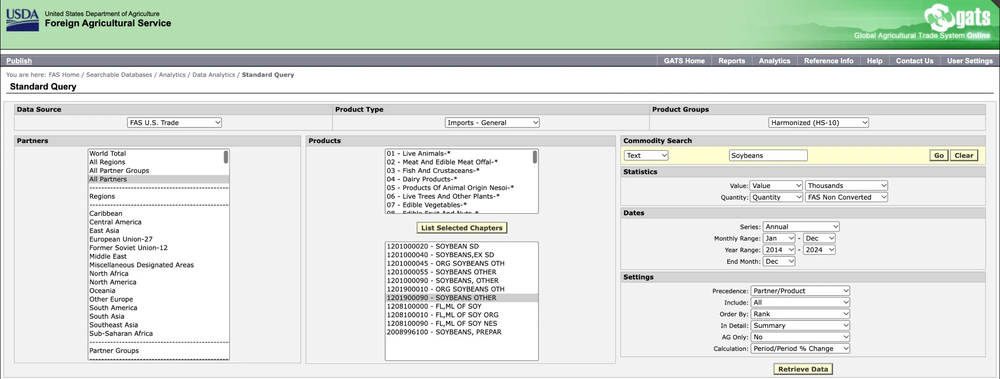

Global Production, Imports and Exports – Part B
Where are soybeans grown around the world, and why?
Soybeans are the biggest oilseed crop in the world. In 2024/25 they made up about 62% of all oilseeds grown, more than rapeseed (canola), sunflower seed, peanuts, and cottonseed put together (USDA-ERS Oil Crops Yearbook, Table 41). This page looks at who grows them, where U.S. soybeans are grown, and how much the U.S. trades.
1. Top ten soybean-producing countries
Using FAOSTAT data, create two bar charts of national production by the ten largest producing countries, one for the most recent year (2024) and one for ten years earlier, then describe the charts' "message."
2024
2014
Source: UN Food and Agriculture Organization, FAOSTAT (crops and livestock products, soya beans, production quantity, all countries). Million metric tons. The U.S. is shown in red.
| Country | 2014 (million t) | 2024 (million t) | Change |
|---|---|---|---|
| Brazil | 86.8 | 144.5 | +67% |
| United States | 106.9 | 118.8 | +11% |
| Argentina | 53.4 | 48.2 | −10% |
| China | 12.2 | 20.7 | +70% |
| India | 10.4 | 15.1 | +46% |
| Paraguay | 10.0 | 11.1 | +11% |
| Canada | 6.0 | 7.6 | +25% |
| Russia | 2.4 | 7.0 | +196% |
| Ukraine | 3.9 | 6.6 | +71% |
| World (all countries) | 306.3 | 397.7 | +30% |
Same source. Uruguay (#9 in 2014) and Russia (#11 in 2014) traded places on the list.
The message of the two charts
Brazil passed the United States. In 2014 the U.S. was the world's #1 soybean grower with 106.9 million tons, and Brazil was #2 with 86.8. Ten years later Brazil had grown by two-thirds, to 144.5 million tons, while the U.S. grew only 11%, to 118.8. Brazil passed the U.S. as the world's #1 soybean grower in 2019/20 (International Journal of Plant Production). Argentina, the #3 grower, actually shrank by 10%.
The list itself barely changed: nine of the ten countries are the same in both years. The world's soybeans are still concentrated in the Americas. The top three (Brazil, the U.S., and Argentina) grew about 78–81% of all soybeans in both years. The one newcomer is Russia, which almost tripled its crop (2.4 → 7.0 million tons) and replaced Uruguay in the top ten. China grew 70%, but its 20.7 million tons are small next to how many soybeans it buys from other countries (see "China's demand" below).


Why South America?
- New seeds for the tropics. Brazil's government research agency, Embrapa, bred a "tropical soybean" that grows well in hot weather and acidic soil. That opened up the huge Cerrado savanna in central Brazil to farming (OCL journal).
- Lots of land. The state of Mato Grosso went from 2% of Brazil's soybeans in 1970 to over a quarter today (OCL journal). Some of this land came from clearing forest and savanna, which is the deforestation concern from Part A.
- China's demand. China, where soybeans started, is now the world's biggest importer (National Geographic). It needs soybean meal to feed its pigs and chickens, and Brazil is its main supplier.
2. Total U.S. imports and exports, 1994–2024
Graph both U.S. imports and exports (ideally on the same graph) from 1994 to 2024, and explain the graph.
U.S. soybean exports and imports, 1994–2024
Show the data table
| Year | Exports (million bu) | Imports (million bu) |
|---|
Zoomed in: U.S. soybean imports only, 1994–2024
The U.S. is a huge soybean exporter and a very small importer. Exports grew from 840 million bushels in 1994 to 1.88 billion in 2024, with a record of 2.27 billion bushels in 2020. In 2024, about 43% of the U.S. soybean crop was shipped overseas as whole beans, up from about a third in 1994. The line also shows how much exports depend on one buyer. The dip in 2018 and 2019 is the trade war with China (see Part D), and exports fell again in 2023.
Imports are tiny: only 29 million bushels in 2024, less than 1% of what the U.S. grows. The biggest jump, to 71.8 million bushels in 2013, came right after the 2012 drought cut the U.S. crop. Some of these are specialty beans, like organic soybeans (see question 4).
3. Top ten soybean-producing U.S. states
Two bar charts of production by the top ten U.S. states, one for the most recent year and one from about ten years earlier. Why are these states on the list, how did things change, and what is surprising?
2024 – value of production
2014 – value of production
Source: USDA National Agricultural Statistics Service, Quick Stats (Survey → Crops → Field Crops → Soybeans → Production, "SOYBEANS - PRODUCTION, MEASURED IN $", state level, annual). Billions of dollars. I added Pennsylvania (in red) as an 11th bar, since that is where I go to school.
| Rank | 2014 | $ billion | 2024 | $ billion |
|---|---|---|---|---|
| 1 | Illinois | 5.58 | Illinois | 7.02 |
| 2 | Iowa | 4.96 | Iowa | 5.95 |
| 3 | Indiana | 3.08 | Indiana | 3.55 |
| 4 | Minnesota | 3.00 | Minnesota | 3.24 |
| 5 | Nebraska | 2.80 | Nebraska | 2.95 |
| 6 | Missouri | 2.60 | Missouri | 2.91 |
| 7 | Ohio | 2.54 | Ohio | 2.62 |
| 8 | South Dakota | 2.15 | North Dakota | 2.34 |
| 9 | North Dakota | 1.92 | South Dakota | 2.24 |
| 10 | Arkansas | 1.68 | Arkansas | 1.66 |
| 19 | Pennsylvania | 0.28 | Pennsylvania | 0.28 |
| All states | 39.48 | All states | 43.88 |
Why these states?
Nine of the top ten are in the Midwest and Northern Plains, the same area as the Corn Belt. Farmers there usually grow soybeans in rotation with corn, and soybeans make their own nitrogen, so they need far less fertilizer: about $60 per acre in Illinois, compared with $190–$200 for corn (Part C). The crop is planted, sprayed, and harvested by machine on large fields, which keeps labor costs very low (Part C). Illinois and Iowa stay on top because they grow the most soybean acres, about 10.2 and 9.4 million acres harvested in 2025 (USDA-NASS). Arkansas, #10, is the only southern state on the list.
How things changed
Not much. The same ten states are on both lists, and the top seven are in the exact same order. The only swap is North Dakota passing South Dakota for #8. Illinois grew the most, from $5.58 to $7.02 billion (+26%), so it pulled further ahead of Iowa. The top ten made up about 77% of the U.S. soybean crop's value in 2014 and 79% in 2024, so soybean farming is getting slightly more concentrated in these states.
What surprised me
- The total value barely grew. The whole U.S. soybean crop was worth $39.5 billion in 2014 and $43.9 billion in 2024, only 11% more, even though a dollar buys a lot less than it did in 2014. That happened because the price farmers get is about the same as ten years ago: $10.10 per bushel for the 2014 crop and $10.00 for the 2024 crop (USDA-ERS Oil Crops Yearbook, Table 3). The crop was bigger (3.93 → 4.37 billion bushels, Table 2), but the price did not keep up. That helps explain why the 2025 budgets in Part C show farmers losing money.
- Pennsylvania stayed at #19 with about $280 million in both years. It is small next to Illinois, but it is still a real soybean state, ahead of states like Texas and Georgia.
4. Where do U.S. soybean imports come from?
Two pie charts of the top sources of U.S. imports, one for 2024 and one for 2014, with a detailed explanation.
How I got the data
I used the USDA Foreign Agricultural Service's Global Agricultural Trade System (GATS), which publishes U.S. Census Bureau trade data. My steps:
- Opened Standard Query, kept Data Source on FAS U.S. Trade, and set Product Type to Imports – General.
- Set Product Groups to Harmonized (HS-10) so the search shows real product codes, then searched the text "Soybeans."
- The search returned several codes (screenshot below). The ones starting with
12010000are old codes that were replaced in 2012, so they have no data for 2014–2024.1208…codes are soy flour and meal, and2008996100is prepared soybeans, so those are not whole soybeans either. That left two current whole-soybean codes:1201900010(organic soybeans) and1201900090(soybeans, other). - GATS only lets you select one code at a time, so I ran the query twice: once for
1201900090– Soybeans, Other (regular soybeans) and once for1201900010– Organic Soybeans, Other. Then I added the two together by country, so my charts cover all imported whole soybeans. - Partners: All Partners. Statistics: value (thousand $). Dates: annual, January–December, 2014 to 2024. Then Retrieve Data and exported the results.

The two pie charts
2014 ($602.1 million)
2024 ($294.7 million)
Source: USDA-FAS GATS, Standard Query, Imports – General, HS 1201900090 + HS 1201900010, all partners, calendar years, value in thousands of dollars. Data: U.S. Census Bureau. Hover over a slice for the exact amount.
| Source country | 2014 ($ thousand) | 2024 ($ thousand) | ||||
|---|---|---|---|---|---|---|
| Regular | Organic | Total (share) | Regular | Organic | Total (share) | |
| Canada | 68,204 | 16,996 | 85,200 (14%) | 56,258 | 29,037 | 85,295 (29%) |
| Argentina | 0 | 14,183 | 14,183 (2%) | 856 | 64,447 | 65,303 (22%) |
| Brazil | 257,707 | 0 | 257,707 (43%) | 57,112 | 0 | 57,112 (19%) |
| Turkey | 10,001 | 11,654 | 21,655 (4%) | 865 | 36,275 | 37,140 (13%) |
| Ghana | 0 | 0 | 0 (0%) | 0 | 13,506 | 13,506 (5%) |
| India | 7,640 | 74,365 | 82,005 (14%) | 21 | 0 | 21 (0%) |
| China | 15,605 | 39,523 | 55,128 (9%) | 2,076 | 101 | 2,177 (1%) |
| Paraguay | 51,505 | 0 | 51,505 (9%) | 728 | 2,516 | 3,244 (1%) |
| Total, all countries | 417,961 | 184,168 | 602,129 | 119,362 | 175,338 | 294,699 |
| Organic share of total | 31% | 59% | ||||
Same source. "Regular" = HS 1201900090; "Organic" = HS 1201900010.
What the charts tell us
The two pies look completely different. In 2014, Brazil was the biggest source by far (43% of import value), and all of it was regular soybeans. By 2024, no country had more than 30%. Canada was #1 (29%), followed by Argentina (22%), Brazil (19%), and Turkey (13%). Total import value also fell by about half, from $602 million to $295 million. That is tiny compared with the roughly 119 million tons of soybeans the U.S. grew in 2024 (FAOSTAT).
The big story is organic soybeans. In 2014, organic beans were about 31% of U.S. soybean import value. In 2024 they were 59%, so most of the money the U.S. spends on imported soybeans now goes to organic ones. This matches what I found in Part C: organic soybeans are less than 1% of U.S. acres, so the U.S. cannot grow enough for organic tofu, soy milk, and organic animal feed. Almost all of Argentina's, Turkey's, and Ghana's sales to the U.S. in 2024 were organic.
Why some countries disappeared:
- India sold the U.S. $74 million of organic soybeans in 2014 and nothing in 2024. In January 2021, USDA ended its agreement that let India's own government certify products as USDA organic. Indian exporters then had to get certified directly by USDA-accredited certifiers (USDA-AMS; Food Safety News). In my data, India's organic sales fell from $25 million in 2020 to $12 million in 2021 and to zero by 2023.
- Turkey jumped to $104 million of organic soybeans in 2016, then crashed to almost nothing by 2019. In 2017, a Washington Post investigation found that millions of pounds of "organic" soybeans shipped through Turkey were really ordinary soybeans, and USDA revoked a Turkish exporter's organic certificate (Washington Post). Turkey's sales have since come back (about $36 million in 2024).
- Brazil's sales jump around from year to year. They were large in 2014, 2021, 2023, and 2024 and zero in 2015–2020 and 2022. 2014 matches a tight U.S. supply: U.S. soybean stocks at the end of the 2013/14 season fell to just 92 million bushels, the lowest in 30 years (USDA-ERS Oil Crops Yearbook, Table 3), so U.S. buyers most likely brought in Brazilian beans to fill the gap.
What surprised me: I expected U.S. imports to be about price or bad harvests. But they are really about trust in organic labels. The countries selling to the U.S. changed a lot because of fraud and certification rules, not because of how many soybeans they grow. Canada is the steady one: next door, and selling about the same $85 million in both years.
5. Where do U.S. soybean exports go?
Two pie charts of the top destinations for U.S. exports, with a detailed explanation.
2014/15 (50.1 million metric tons)
2024/25 (51.2 million metric tons)
Source: USDA-ERS Oil Crops Yearbook, Table 38, "U.S. soybean exports by selected destinations" (2022 edition for 2014/15; 2025 edition for 2024/25). USDA builds this table from U.S. Census Bureau foreign trade data, the same trade records used in USDA's GATS database. Thousand metric tons; marketing years run September–August. Hover over a slice for the exact amount.
| Destination | 2014/15 (1,000 t) | Share | 2024/25 (1,000 t) | Share |
|---|---|---|---|---|
| China | 29,516 | 58.9% | 22,649 | 44.2% |
| Mexico | 3,578 | 7.1% | 5,208 | 10.2% |
| Egypt | 596 | 1.2% | 3,339 | 6.5% |
| Germany | 1,085 | 2.2% | 2,464 | 4.8% |
| Japan | 2,171 | 4.3% | 2,172 | 4.2% |
| Indonesia | 1,930 | 3.8% | 2,159 | 4.2% |
| Netherlands | 1,822 | 3.6% | 813 | 1.6% |
| Taiwan | 1,434 | 2.9% | 1,514 | 3.0% |
| Total, all countries | 50,136 | 100% | 51,227 | 100% |
China is still the #1 buyer, but it matters less than it did ten years ago. In 2014/15 China bought 59% of all U.S. soybean exports; by 2024/25 that was down to 44%, a drop of about 6.9 million metric tons. The total amount the U.S. exported barely changed (50.1 vs. 51.2 million tons), which means other buyers filled almost the whole gap. Mexico grew from 7% to 10%, Egypt went from about 1% to 6.5%, and Germany more than doubled its purchases.
My analysis: this is what the soybean industry calls "diversifying." After China cut back during the 2018 trade war (see Part D), U.S. exporters looked for other customers. Mexico is a natural fit because it is right next door. Even so, almost half of U.S. soybean exports still go to one country, so a fight with China can still hit soybean farmers hard, which is exactly what happened again in 2025.